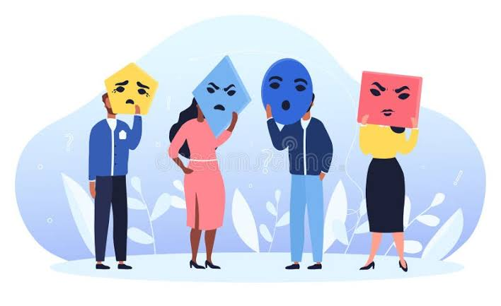

¿porque es importante la salud mental?
La salud mental es muy importante durante la adolescencia, ya que es una etapa de muchos cambios físicos, emocionales y sociales. Los adolescentes pueden enfrentar problemas como estrés, ansiedad, inseguridad o presión escolar y social. Por eso, es fundamental que tengan un ambiente de apoyo donde puedan expresar lo que sienten sin miedo a ser juzgados. Cuidar la salud mental ayuda a mejorar la autoestima, las relaciones con los demás y el rendimiento escolar. Escuchar, comprender y pedir ayuda cuando sea necesario puede hacer una gran diferencia en su bienestar.

¿como ayudar a alguien que esta atravesando un problema emocional?
Si conocemos a alguien que está pasando por una situación difícil, podemos ayudarlo escuchándolo sin juzgar, mostrando empatía y haciéndole saber que no está solo. También podemos animarlo a buscar apoyo de un familiar, amigo o profesional de la salud. A veces, simplemente estar presentes y escuchar puede marcar una gran diferencia.